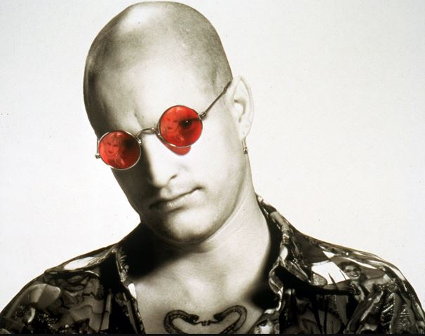
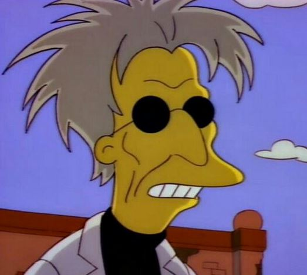

90s Circular (Sun)glasses Archetype Shrine
There is a certain kind of 90s character which exists in phase space between geeky hacker and tacticool remote-activated bomb user.
| Image Reference | Name | Class | Source | Vibe | Comment |
|---|---|---|---|---|---|
| Sarah Connor | Merc | Terminator 2, 1992 | 10/10 | The original cool traumatized lead character, the truest merc on the list. | |
| Harley Stone | Merc | Split Second, 1992 | 10/10 | This movie sucks but Rutger Hauer has cyberpunk in his DNA | |
| Boris | Hacker | Goldeneye, 1995 | 10/10 | "I'm invincible!" | |
| Tank Girl | Merc | Tank Girl | 10/10 | I'm glad I could enjoy stuff like this before we invented cringe, because Tank Girl exists at a cosmic scale of 'LOL RANDOM' energy by today's standards. | |
| Morpheus | Prophet | The Matrix, 1999 | 10/10 | Possibly the most unique pair in the set, they stay clipped on via pure Wachowski energy | |
| Leon the Professional | Merc | Leon the Professional, 1994 | 10/10 | French guys get +1 to the merc category by default | |
| Batou | Merc | Ghost in the Shell, 1995 | 10/10 | Dude is so cool he had them surgically built into his head. As a member of Section 9 he's almost hacker enough to count as one, but his use of guns and being a cop takes him over the edge into merc terrirtory | |
| Cereal Killer / Emanuel Goldstein | Hacker | Hackers, 1995 | 10/10 | "Of all the things I've lost, I miss my mind the most". Even if Matthew Lillard wasnt wearing those glasses, we can say for sure he is spirtually wearing those glasses. Lillard represents the furthest edge of the 'oddball tinkerer' spectrum these characters are measured on. | |
| Spider Jerusalem | Prophet | Transmetropolitan | Partial Credit | If this had been a movie and not a comic book it would have resulted in a far worse case of Cautionary Tale Worshiping Syndrome than even Fight Club among men of my age. | |
| Castor Troy | Villain | Face/Off, 1997 | Partial Credit | Villains wear suits | |
|  | Mickey | Merc | Natural Born Killers, 1994 | 10/10 | |
| Simon Peter Gruber | Villain | Die Hard with a Vengeance, 1995 | Partial Credit | Jeremy Irons is such an odd man. | |
| Yaz / Jack Paul Quinn | Merc | Double Team, 1997 | Partial Credit | Jean-Claude Van Damme and Dennis Rodman, incredibly stupid movie. | |
| Alex Raine | Merc | Nemesis, 1992 | 10/10 | Little known film staring Olivier Gruner as Jean-Claude Van Damme, it's really bad but aesthetically inventive. So much Matrix merc stuff going on here, especially for a 1992 low-budget affair. | |
| Hal 'Otakon' Emmerich | Hacker | Metal Gear Solid, 1998 | Partial Credit | Perfect example of the "Character from Japanese Media who has a Vaguely German Name" trope. | |
| Honorable Mentions | |||||
| Dracula | Villain | Bram Stoker's Dracula, 1992 | Honorable Mention | The pinball machine of this movie is legendary | |
|  | Sebastian Cobb | Prophet | The Simpsons, 1993 | Honorable Mention | Zee Germans |
| Colonel Jack O'Neil | Merc | Stargate, 1994 | Honorable Mention | Runner up because the character is a bit too square to be wearing these glasses, but they do fit the tacti-cool vibes | |
| Biology Teacher | Villain | Starship Troopers, 1997 | Honorable Mention | Too much of a side character but she steals the show in the 1 minute she's in | |
| Ray Arnold | Hacker | Jurassic Park, 1993 | Honorable Mention | A little too stiff to be a true hacker, but we give him the points because he is still a cool character. | |
| Iggy | Villain | Super Mario Brothers, 1993 | Honorable Mention | Didn't appear enough in the film to qualify for the big leagues, but a classic henchy villain character none-the-less. | |
| Nicolas Cage (Again) | Prophet | Reality | Honorable Mention | Fun fact: Nicolas Cage was never acting in any of the movies he was in. | |
| Hideo Kojima | Prophet | Reality | Honorable Mention | I think this dude is both a genius and also overhyped and annoying. The Kanye West of "strand type" games | |